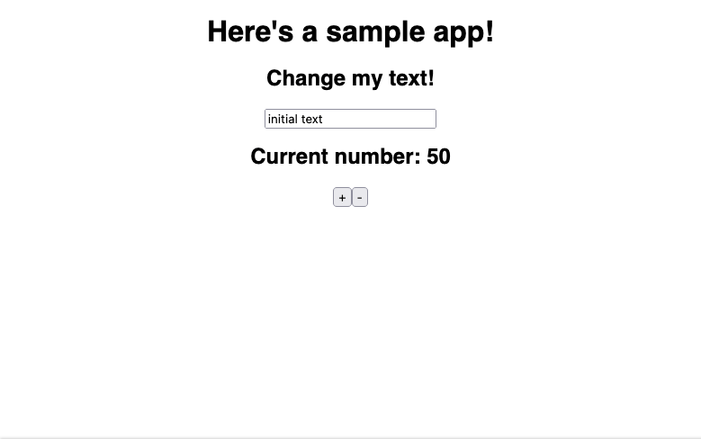

Can I Roll My Own State Container For React?
I was recently chatting with some former coworkers. One of them asked if Redux was still the go-to library for React app state management.
I was surprised when others brought up some libraries I hadn't heard of called Recoil and Zustand. I've reviewed them briefly, and it looks like they each bring interesting benefits and improvements over bog-standard Redux. Without having actually used either of them, that's really the most I can say about them.
The last time I worked on a React app that benefited from the type of state container that Redux provides was around five years ago. I used Redux at that time. I've still used React since then, but the apps I've worked on have synchronized their Big State™️ via their back-ends. I've found React's built-in hooks to be adequate for the rest. I'll reach for third-party libraries for form management, but otherwise the built-in hooks and custom hooks composed from them tend to do the job.
At some point since the useReducer hook landed, the notion that Redux isn't really necessary anymore stuck in my brain. You should be able to roll your own version using React's core features now, right?
When I think of Redux, I think of three main features: The Reducer™️, the ability to access the state container from arbitrary components without having to pass stuff up and down the tree, and selectors. In the version I'm going to throw together here, the reducer and state container are provided by useReducer, and the arbitrary component state container access will be provided by a React context. Selectors should be an implementation detail. 👀
Let's start with the bit that should be the same across any application.
import React, {
Context,
Dispatch,
ReactNode,
Reducer,
createContext,
useContext,
useReducer
} from "react";
type StoreContext<S, A> = Context<{ state: S; dispatch: Dispatch<A> }>;
interface Props<S, A> {
context: StoreContext<S, A>;
reducer: Reducer<S, A>;
children: ReactNode;
}
export function createStoreContext<S, A>(initialState: S): StoreContext<S, A> {
return createContext({
state: initialState,
dispatch: (() => {}) as Dispatch<A>
});
}
export function Store<S, A>({
children,
context: Context,
reducer
}: Props<S, A>) {
const { state: initialState } = useContext(Context);
const [state, dispatch] = useReducer(reducer, initialState);
return (
<Context.Provider value={{ state, dispatch }}>{children}</Context.Provider>
);
}
I've created a convenience function called createStoreContext that takes an initial state and returns a context that will hold your app's state. The only thing that might be considered tricky here is that I'm using a no-op function as the placeholder for the dispatch function until the context is provided to the Store component.
The Store component is what I'd call a surrogate context provider component. I made up that word salad just now to describe it, but it's a common pattern. It acts like a context provider, but it adds the logic for how the context is going to be used. In this case, that logic is just the useReducer function.
Next, I'll set up the app-specific types and logic for a contrived example app. This app has two pieces of state: a string and a number.
import { createStoreContext } from "./Store";
interface State {
number: number;
text: string;
}
type Action =
| { type: "INCREMENT_NUMBER" | "DECREMENT_NUMBER" }
| { type: "CHANGE_TEXT"; updatedText: string };
const initialState: State = {
number: 50,
text: "initial text"
};
function reduceText(state: string, action: Action) {
switch (action.type) {
case "CHANGE_TEXT":
return action.updatedText;
default:
return state;
}
}
function reduceNumber(state: number, action: Action) {
switch (action.type) {
case "INCREMENT_NUMBER":
return state + 1;
case "DECREMENT_NUMBER":
return state - 1;
default:
return state;
}
}
export function reducer(state: State, action: Action): State {
return {
number: reduceNumber(state.number, action),
text: reduceText(state.text, action)
};
}
export const AppState = createStoreContext<State, Action>(initialState);
I hope you were able to stay awake through all that. I made some opinionated choices about composing reducers, but any valid reducer function will work.
I decided to create the context instance in this file rather than in the root App component to make the dependency tree a little cleaner since every component that connects to our state container will depend on that context instance.
Speaking of the root App component, I'll make that now.
import React from "react";
import { Store } from "./Store";
import { AppState, reducer } from "./state";
import TextView from "./TextView";
import NumberView from "./NumberView";
import "./styles.css";
export default function App() {
return (
<Store context={AppState} reducer={reducer}>
<div className="App">
<h1>Here's a sample app!</h1>
<TextView />
<NumberView />
</div>
</Store>
);
}
I'm passing the AppState context into the Store component as well as the app's reducer. I'm going to write two components that directly utilize the app state: TextView and NumberView.
import React, { ChangeEventHandler, useCallback, useContext } from "react";
import { AppState } from "./state";
export default function TextView() {
const { state, dispatch } = useContext(AppState);
const handleChange = useCallback<ChangeEventHandler<HTMLInputElement>>(
(event) =>
dispatch({ type: "CHANGE_TEXT", updatedText: event.target.value }),
[dispatch]
);
return (
<div>
<h2>Change my text!</h2>
<input type="text" value={state.text} onChange={handleChange} />
</div>
);
}
import React, { ReactEventHandler, useCallback, useContext } from "react";
import { AppState } from "./state";
export default function NumberView() {
const { state, dispatch } = useContext(AppState);
const handleIncrement = useCallback<ReactEventHandler>(
(event) => dispatch({ type: "INCREMENT_NUMBER" }),
[dispatch]
);
const handleDecrement = useCallback<ReactEventHandler>(
(event) => dispatch({ type: "DECREMENT_NUMBER" }),
[dispatch]
);
return (
<div>
<h2>Current number: {state.number}</h2>
<button onClick={handleIncrement}>+</button>
<button onClick={handleDecrement}>-</button>
</div>
);
}
At this point, the app works. I'm using React's useContext hook directly to access the state and the dispatch function.

But there's a pretty big problem. Because each component depends on the entire application state, every component re-renders on every state change regardless of whether the change was actually relevant to the component in question. In other words, I need selectors.
This is where my hand-rolled scheme falls apart. There's currently no way to avoid these types of unnecessary re-renders while using a single context. No matter what kind of memoization strategies you employ, the useContext hook will trigger a re-render of every component attached to the context upon a state change.
I'm not the only one out there who thinks this is a glaring omission from React's API. There's an open RFC for just such a feature that's been hanging out since 2019.
If you were really determined to write your own app container only using React primitives, the next place I'd look would be the relatively new useSyncExternalStore hook. I'm almost certain you can achieve the desired effects with that hook, but it's just not as interesting. You'd be building Redux from bare JavaScript to interface with the useSyncExternalStore API without being able to lean on any other built-in hooks. At that point, just use a library.
UPDATE
After discussing this with a friend and former co-worker1, this could probably also be accomplished using a higher-order component to conditionally re-render components. I personally dislike the ergonomics of HOCs in this era of hooks. Besides React.memo, which could be argued isn't a "true" HOC, I haven't had to use HOCs in years.